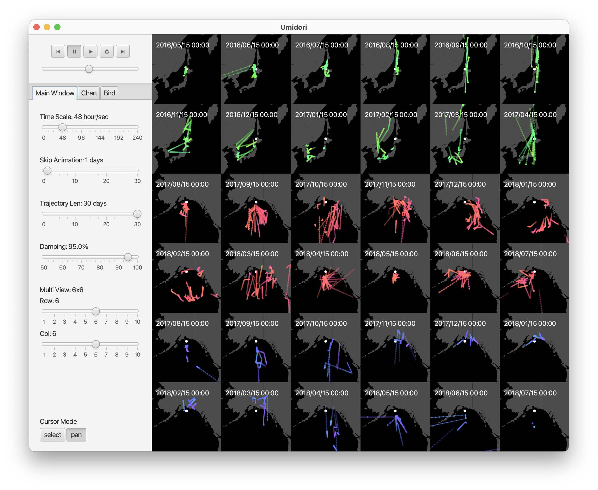

Umidori
2021.02 / Visualization

卒業研究で開発した可視化ツール。海鳥の行動データを可視化することで比較分析の支援を目的とする。
このツールに関する研究論文は第196回HCI研究会 学生奨励賞(一般社団法人 情報処理学会)と茗溪会賞(一般社団法人 茗溪会)を受賞しました。
課題
海鳥は種や生息地や時期によって移動の様子が異なるため、その移動データを分析するためには比較が重要になってくる。
また海鳥をはじめとする移動体の移動データは可視化することでその理解が進む。
さらにデータの可視化作業は鳥類の研究者にとっては煩わしい作業である。
こういった背景から分析ツールは必須であることがわかるが、海鳥の移動データの比較分析のための効率的な可視化ツールはない。
アプローチ
自由度の高いSmall Multiplesを用いた視覚表現と、対話的な編集が可能なUIを備えた統合的ツールを開発した。
Development
Java, JavaFX
Publication
- Tomoya Onuki , Kazuo Misue. Visualization tool for comparative analysis of seabird movement data. In Proceedings of 2022 26th International Conference on Information Visualisation (iV2022), pp.286–292, 2022. link
- 小貫智弥 , 三末和男. 海鳥の移動データの比較分析のための可視化ツールの開発, 情報処理学会研究報告, Vol.2022-HCI-196, No.6, 2022. link